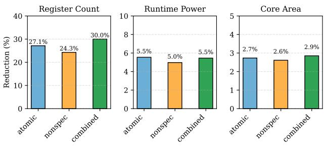
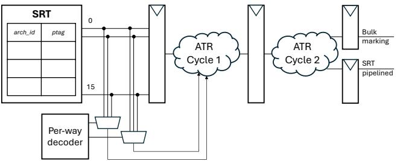

ATR: Out-of-Order Register Release Exploiting Atomic Regions 通俗讲解¶
0. 整体创新点通俗解读¶
痛点直击 (The "Why")
- 现代高性能处理器为了榨取 ILP (Instruction-Level Parallelism)，需要维持大量 in-flight instructions，这直接导致 physical register file (PRF) 的规模变得极其庞大（如 Intel Golden Cove 有 280 个条目）。
- 传统的 register renaming 机制在释放物理寄存器时非常保守：它必须等到“重新定义同一个架构寄存器的下一条指令”commit 之后，才敢释放上一个值占用的物理寄存器。
- 这种保守策略造成了巨大的资源浪费。论文分析指出，在 SPEC2017int 中，寄存器有 41.03% 的时间处于“已无用但未被释放”的状态（见图4）。它们明明已经被所有消费者读取过了，也已经被新值覆盖了，却因为担心 branch misprediction 或 exception 导致流水线 flush 后需要恢复旧值，而不得不继续占着宝贵的 PRF 空间。
- 之前的 early release 方案要么是 speculative 的（需要复杂的 shadow register file 来备份，见图2），要么是 non-speculative 的（必须等到 redefining instruction precommit，这通常只比 commit 早一点点，收益有限，见图4）。它们都没能安全、高效地吃掉那块巨大的“未开发地带”。

Figure 4: Cyclecount distribution across the register lifecycle.
通俗比方 (The Analogy)
- 想象一个大型图书馆（PRF），读者（instructions）来借书（寄存器值）。传统规则是：只有当一个新读者（redefining instruction）正式办完还书手续（commit）后，管理员才能把上一个读者借的同一本书的副本（old physical register）放回书架。
- 问题在于，很多时候，上一个读者早就看完了（consumed），而且新读者也已经拿到了书开始看了（renamed），但就因为新读者还没走到还书处（可能还在排队等电梯，即 unresolved branch），管理员就得一直把那本旧书副本锁在服务台上，不能放回去。
- ATR 的思路是：如果我能确定这一小撮读者（一个 atomic commit region）是一个“旅行团”，他们要么全部顺利参观完（commit），要么因为导游走错路（misprediction）而集体被请出去（flush），那么我就可以在他们内部交接完成后（consumed & redefined），立刻把旧书副本放回书架，根本不用等他们走到出口（commit）。因为他们不可能有人中途离队再回来要那本旧书。
关键一招 (The "How")
- 作者的核心洞察是识别出程序中天然存在的 atomic commit regions —— 即不包含任何 conditional branches、indirect jumps 或 exception-causing instructions（如 loads/stores, div）的指令序列。
- 在这种区域内，所有指令的命运是绑定的：要么全部成功提交，要么全部被冲刷掉。这意味着，一旦一个寄存器在这个区域内被分配、被消费、并被重新定义，它的旧值就绝对安全可以被释放了，因为不存在“冲刷后又有新消费者出现”的情况。
- 为了实现这一点，作者没有引入复杂的栈、队列或影子存储，而是做了一个非常轻量级的改动：
- 在 rename stage，为每个物理寄存器维护一个简单的 consumer counter。
- 当 rename 阶段遇到一个 branch 或 exception-causing instruction 时，立即将当前所有活跃的物理寄存器的 consumer counter 标记为 no-early-release。
- 对于那些没有被标记的寄存器（即属于 atomic region 的），一旦其 consumer count 归零且已被重新定义，就可以立即释放。
- 通过在指令元数据中设置一个 invalid previous ptag 标志，巧妙地避免了在 commit 阶段对同一个寄存器进行重复释放（double-free）的问题。

Figure 6: Atomic register ratio.
这个设计的精妙之处在于，它将一个复杂的全局性问题（何时安全释放寄存器），转化为了一个局部的、基于指令流特征的简单判断。它利用了程序本身固有的结构特性，以极低的硬件开销（每个寄存器仅3-bit counter），撬动了显著的性能提升（64-entry PRF 下平均 5.13% speedup）或面积/功耗节省（在性能损失\<3%的前提下，PRF size 可减少 27.1%）。

Figure 15: Overhead reduction of different schemes.
1. Atomic Commit Regions (ELI5)¶
痛点直击
- 传统处理器在 寄存器重命名 (Register Renaming) 后，必须等到“重新定义同一个架构寄存器的指令” 提交 (commit) 时，才能释放旧的物理寄存器。这个策略非常 保守。
- 问题在于，很多寄存器在被“消费完”后，还要白白占着宝贵的 物理寄存器文件 (Physical Register File) 空间，直到那个遥远的“重新定义者”提交。这造成了巨大的 寄存器文件压力 (Register File Pressure)。
- 之前的 推测性提前释放 (Speculative Early Release) 方法虽然激进，但不安全：一旦分支预测错误，那些已被释放的寄存器值可能又被需要，导致程序崩溃。为了安全，又得引入复杂的 影子寄存器文件 (Shadow Register File) 来备份，得不偿失。
- 而 非推测性提前释放 (Non-Speculative Early Release) 虽然安全，但又太 迟钝：它要求“重新定义者”必须变成 非推测状态 (precommitted)，即所有更老的分支和异常指令都必须先解决。在现代深流水线中，这个等待时间可能很长，错失了大量优化机会。
通俗比方
- 想象一个图书馆（寄存器文件），读者（指令）借书（寄存器）后，按规定必须等下一位预约这本书的读者（重新定义者）成功取走书并确认后，前一位读者才算正式还书。
- 这个规定很安全，但效率低下。有些书（寄存器）明明已经被前一位读者看完了，却因为下一位读者还在排队（分支未解决），书一直锁在前一位读者名下，别人也借不了。
- Atomic Commit Regions 的思路是：如果发现一连串读者（指令序列）之间 没有岔路口（条件分支），也 不会突然有紧急事件（异常），那么这一整串读者就可以被视为一个 “行动小组”。
- 对于这个小组内部的借阅行为，我们可以灵活处理：只要小组内最后一个要看这本书的人看完了，并且小组里有人已经预约了下一本书，我们就可以立刻把旧书收回，不用等整个小组走到图书馆出口（提交点）。因为这个小组要么全员顺利走到出口，要么因为前面的岔路口错了而全员被召回（flush），无论如何，小组内部不会再有新的人来借这本旧书了。
关键一招
- 作者的核心洞察是：在一个 原子提交区域 (Atomic Commit Region) 内——即一段 不含条件分支、间接跳转和任何可能引发异常的指令（如Load/Store, Div） 的连续指令序列——所有指令的命运是 绑定 的。它们要么全部提交，要么全部被冲刷掉。
- 基于此，作者扭转了释放逻辑：
- 传统做法：释放寄存器 P1 的时机 = 重新定义者 I3 提交。
- ATR 做法：对于在原子区域内的寄存器 P1，释放时机 = (1) 重新定义者 I3 已重命名 且 (2) P1 的 消费者计数归零。
- 为了实现这一点，作者在重命名阶段增加了一个简单的硬件机制：
- 给每个物理寄存器维护一个 3-bit 消费者计数器。
- 当遇到 分支或异常指令 时，立即将当前所有架构寄存器对应的物理寄存器的计数器标记为 no-early-release（值为7），表示它们不再属于任何原子区域。
- 只有那些计数器未被标记的寄存器，在满足“被重定义”和“消费者为0”两个条件时，才允许被 提前释放。
- 这个设计巧妙地避开了复杂的检查点和恢复逻辑，因为它利用了原子区域 天然的原子性 来保证安全。即使区域外的分支预测错误，整个原子区域都会被冲刷，提前释放的寄存器也无需恢复，因为它们所属的整个计算上下文都已作废。
Figure 6: Atomic register ratio.
上图展示了在 SPEC2017 基准测试中，有相当大比例（int 平均 17.04%, fp 平均 13.14%）的寄存器分配发生在这种原子区域内，这为 ATR 提供了充足的优化空间。通过安全地提前释放这些寄存器，ATR 在仅 64-entry 的小寄存器文件上就能获得 5.13% 的平均性能提升。
2. Consumer Count Tracking (ELI5)¶
痛点直击 (The "Why")
- 传统寄存器重命名机制有个“死板”的规则：一个物理寄存器（比如 p1）必须等到下一个重定义同名架构寄存器的指令（比如 I5）提交（commit）后才能被释放。
- 这个规则很安全，但效率极低。因为在 I5 提交前的漫长等待中，p1 可能早就被所有消费者用完了，却还占着宝贵的寄存器文件（Register File）位置。
- 尤其是在寄存器文件很小（比如64-entry）时，这种“僵尸”寄存器会迅速耗尽资源，导致 rename 阶段stall，严重拖慢 IPC。
- 之前有人想搞“激进提前释放”，即一旦发现没人用了就立刻释放。但这很危险！如果中间有个分支预测错误，I5 被 flush 掉了，那么后续可能又会出现新的消费者需要 p1 的值，而它已经被释放了，程序就错了。
通俗比方 (The Analogy)
- 想象你在一个大型共享工具间（寄存器文件）里工作。你（指令 I1）借了一个扳手（物理寄存器 p1）。
- 按老规矩，你必须等到你的接班人（指令 I5）正式签收（commit）了他自己的新扳手后，你才能把旧扳手还回去。
- 但其实，你的所有徒弟（消费者 I2, I3...）早就用完你的扳手了。扳手在你手里就是个摆设，却让别人借不到。
- ATR 的做法是：如果你和你的所有徒弟、以及你的接班人，都在一个封闭的、无干扰的独立车间（Atomic Region） 里工作，那么只要你的徒弟们都说“用完了”，并且接班人也来了（renamed），你就可以立刻把扳手还回去。
- 为什么安全？因为这个车间要么全员顺利完工（commit），要么因为外部原因（比如车间外的主管叫停）全员一起被清退（flush）。不存在“接班人被清退，但外面又来个新人要借你扳手”的情况。
关键一招 (The "How")
- 作者并没有改变整个寄存器管理的根基，而是在物理寄存器表（PRT）里为每个寄存器加了一个微小的“计数器”（3-bit consumer count）。
- 这个计数器的工作逻辑非常直接：
- 当一个新寄存器被分配时，计数器初始化为 0。
- 每当有一个新指令在 rename 阶段将其作为源操作数（即成为消费者）时，计数器就 +1。
- 每当一个消费者指令在 issue 阶段真正读取该寄存器的值时，计数器就 -1。
- 核心扭转点在于释放条件的判断。ATR 在两个条件同时满足时，就触发提前释放：
- Consumer Count 归零：表示所有已知的消费者都已消费完毕。
- 寄存器已被重定义：rename 阶段已经为同一个架构寄存器分配了新的物理寄存器。
- 为了确保这个逻辑只在安全的“独立车间”（Atomic Region）里生效，ATR 还增加了一个保护机制：一旦 rename 阶段遇到分支或异常指令，它会立即将当前所有活跃的架构寄存器对应的物理寄存器的计数器标记为 no-early-release（用保留值7表示）。这样，这些寄存器就会退回到传统的、保守的释放模式，从而保证了精确异常（precise exceptions）和整体安全性。

Figure 9: Renaming stage modifcations for bulk setting of no-early-release
- 这个设计的精妙之处在于，它用极低的硬件开销（每个寄存器仅 3 bits，对64位整数寄存器文件来说开销约 4.6%），就精准地捕获了一大类（SPECint中 17.04%）可以安全提前释放的寄存器，从而在不牺牲安全性的前提下，显著缓解了寄存器文件的压力。
3. Bulk No-Early-Release Marking (ELI5)¶
痛点直击
- 传统的 early register release（提前释放寄存器）机制，无论是 speculative（推测性的）还是 non-speculative（非推测性的），都面临一个核心困境：如何安全地知道一个寄存器可以被释放？
- Speculative 方法太激进，一旦遇到 branch misprediction（分支预测错误），那些已经被释放的寄存器值可能又被需要，导致灾难性错误，必须用复杂的 shadow register file（影子寄存器文件）来备份，开销巨大。
- Non-speculative 方法又太保守，它必须等到重新定义该寄存器的指令 precommit（预提交），这意味着要等所有更老的 branches（分支）和 exception-causing instructions（异常引发指令，如load/store）都执行完毕。在现代处理器中，一个长延迟的 load 指令可能会卡住后面一大片寄存器的释放，造成巨大的 register file pressure（寄存器文件压力），即使这些寄存器本身已经没用了。
通俗比方
- 想象你在一个大型开放式办公室（ROB, Reorder Buffer）里工作，每个人（instruction）都在处理自己的任务，并会把中间结果写在自己的白板（physical register）上。
- 办公室有个规则：只有当你的继任者（redefining instruction）正式接手并确认了你的工作后，你才能擦掉自己的白板。
- 现在，ATR发现，办公室里有些小隔间（atomic commit regions）很特别：里面的人要么全部完成工作，要么因为一个外部事件（比如火警，类比 misprediction）而全部立刻撤离。对于这种隔间里的人，只要他的继任者来了并且没人再需要看他的白板，他就可以立刻擦掉，不用等整个办公室的流程走完。
- 但是，怎么快速标记哪些人不在这种安全隔间里呢？“Bulk No-Early-Release Marking”就像是办公室的广播系统。每当有一个人开始处理一个危险任务（比如要出门去查一个不确定的地址，类比 branch 或 load），广播就会立刻响起：“注意！所有目前正在工作的同事，请暂时锁住你们的白板，不要擦！” 这个广播是瞬间发给所有人的，确保了安全性。
关键一招
- 作者没有为每个寄存器单独追踪复杂的依赖或历史，而是巧妙地利用了 **SRT **(Speculative Renaming Table) 这个现成的数据结构。
- 在 rename stage（重命名阶段），每当流水线遇到一个 branch 或 exception-causing instruction，ATR机制会立刻、并行地做一件事：
- 读取 SRT 中当前映射到所有 architectural registers（架构寄存器）的 ptags（物理标签）。
- 将这些 ptags 对应的 consumer counter（消费者计数器）一次性全部设置为一个特殊值（论文中是7），这个值代表 no-early-release（不可提前释放）。
- 这个操作的关键在于 bulk（批量）和 at rename time（在重命名时）。它不关心这些寄存器具体是谁产生的，只关心“此刻所有活着的寄存器，因为即将进入一个不安全的区域，所以都不能再享受提前释放的特权了”。
- 这个设计极其高效，因为它：
- 利用了 SRT 本身就存在的多读口。
- 通过简单的 parallelized logic（并行逻辑）就能在单周期内完成对所有相关 ptags 的标记。
- 完美地划定了 atomic commit regions 的边界：从一个 no-early-release 标记点之后，到下一个 no-early-release 标记点之前，这段区域内的寄存器就有可能被安全地提前释放。
Figure 9: Renaming stage modifcations for bulk setting of no-early-release
4. Double-Free Avoidance Mechanism (ELI5)¶
痛点直击
在传统的寄存器重命名机制里，一个物理寄存器（ptag）的释放时机非常明确：等到下一个重定义同一架构寄存器的指令 提交（commit） 时才释放。这是一种“保守但安全”的策略。然而，ATR的核心思想是“提前释放”——只要在一个原子提交区域（Atomic Commit Region） 内，确认一个寄存器已经被消费完且被重定义了，就可以立刻释放，不用傻等提交。
- 这就带来了一个致命问题：双重释放（Double-Free）。
- 具体来说，一个寄存器可能被 ATR机制在执行阶段就释放了，但当流水线正常走到提交阶段时，提交逻辑并不知道这个寄存器已经被释放过，会尝试 再次释放 它。
- 更复杂的情况发生在 分支预测错误（misprediction） 导致流水线刷新（flush）时。刷新逻辑需要回收所有被错误路径分配的寄存器，但它同样无法区分哪些寄存器已经被ATR提前释放了，哪些还没有。如果处理不当，要么会漏掉一些寄存器导致泄漏，要么会重复释放已经归还的寄存器，破坏空闲列表（free list）的完整性，最终导致系统崩溃。
通俗比方
想象你是一个图书管理员（负责管理物理寄存器），你的规则是：一本书（寄存器）只有在下一位预约者（重定义指令）正式签收（提交）后，才能从上一位读者（生产者指令）名下注销。
现在，ATR提出了一种新规则：如果能证明上一位读者和所有可能借这本书的读者都在同一个、不会被打断的读书会（原子区域）里，那么一旦读书会结束（最后一位读者看完且下一位读者出现），就可以立刻把书放回书架，不用等那位新读者来签收。
- 问题来了：你的老式登记系统（提交逻辑）还不知道这个新规则。当新读者最终来签收时，系统还是会试图把这本书“再放回一次”书架，造成混乱。
- 更糟的是，如果这个读书会被突然取消（分支预测错误），你需要把所有分发出去的书都收回来。但你不知道哪些书因为新规则已经被提前收回了，哪些还在读者手里。如果你把已经收回的书又记一次“收回”，你的库存记录就乱套了。
ATR的“双重释放避免机制”就像是给你的登记系统加了两个智能标签：“已重定义（redefined）” 和 “已消费（consumed）”，并且在书刚被借出时就给它贴上一个“可提前归还”的特殊标记（将前一个ptag置为无效）。这样，无论是正常签收还是紧急回收，系统都能准确知道每本书的状态，绝不会重复操作。
关键一招
作者并没有改变寄存器释放的根本逻辑，而是巧妙地在 元数据管理和状态追踪 上做了文章，通过两套互补的机制来杜绝双重释放：
-
在重命名（Rename）阶段：
- 当检测到一个指令可以开启一个原子区域（即，它重定义了一个寄存器，且路径上没有分支或异常指令），ATR会立即将该架构寄存器 之前映射的ptag字段标记为“无效（invalid）”。
- 这个“无效”标记是一个关键信号，它告诉后续的 提交（commit）逻辑：“这个ptag的释放工作已经外包给ATR了，你不用管了”。这样就切断了提交阶段对这个ptag的释放路径，从根本上防止了第一种双重释放。
-
在流水线刷新（Flush）阶段：
- 刷新时，系统需要从ROB尾部向前遍历，回收所有错误路径上的ptag。此时，仅靠“无效”标记还不够，因为还需要知道ATR是否 已经执行了 释放操作。
- 为此，ATR引入了两个轻量级的 每架构寄存器的标志位：
redefined和consumed。- 在遍历过程中，如果遇到一个目的地寄存器，且其前一个ptag是“无效”的（即ATR可释放的），就将该架构寄存器的
redefined标位置为真。 - 接着，如果后续遇到一个源操作数是这个寄存器的指令，并且该指令 尚未发射（issued），说明这个值还没被消费，就将
consumed标位置为假。
- 在遍历过程中，如果遇到一个目的地寄存器，且其前一个ptag是“无效”的（即ATR可释放的），就将该架构寄存器的
- 最终，对于每个遇到的、前一个ptag为“无效”的目的地寄存器，系统会检查：如果
redefined和consumed同时为真，就说明ATR 肯定已经释放过 这个ptag了，因此在刷新时 跳过 对它的回收。 - 这套标志位机制就像一个临时的、精确到架构寄存器级别的“待办事项清单”，确保刷新逻辑能完美地与ATR的异步释放操作协同工作，避免了第二种双重释放。
Figure 9: Renaming stage modifcations for bulk setting of no-early-release